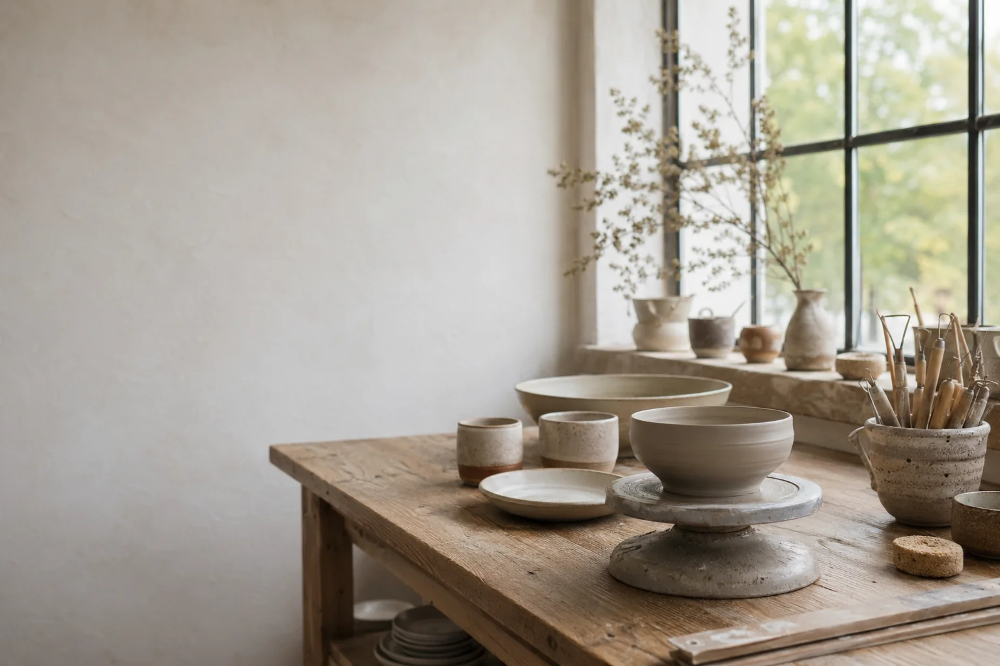
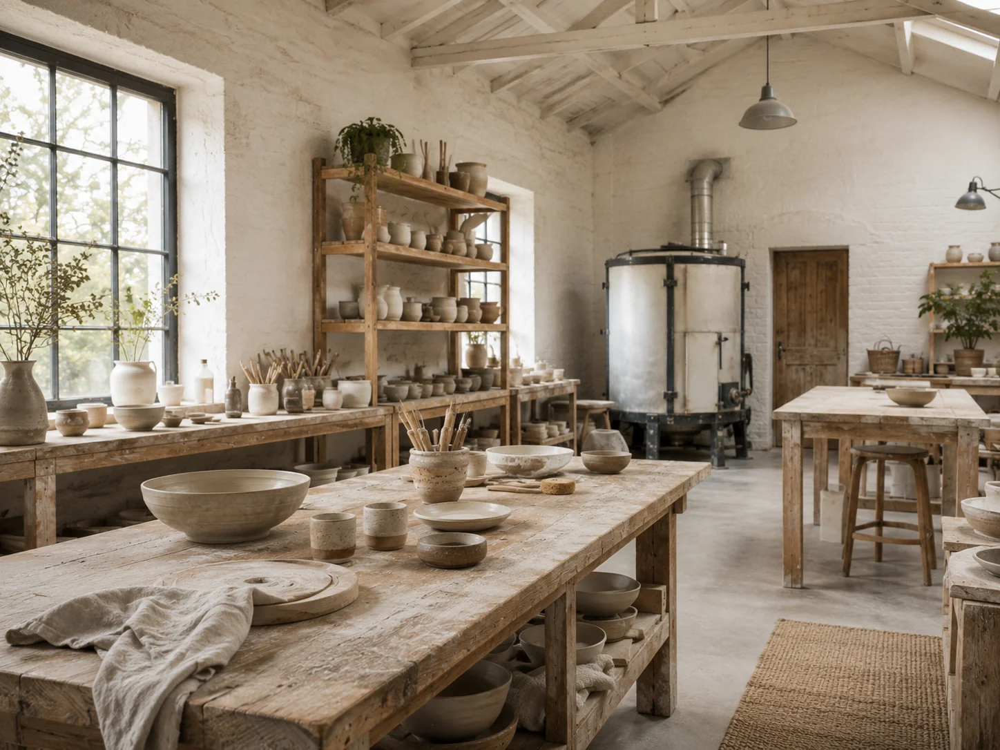
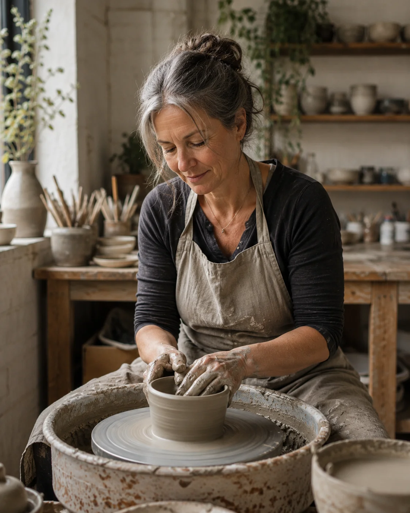
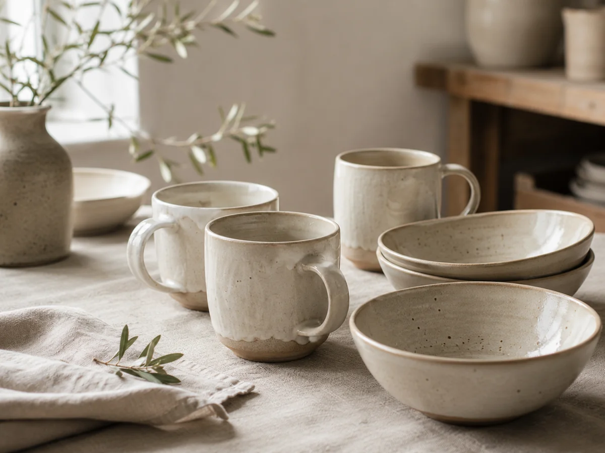
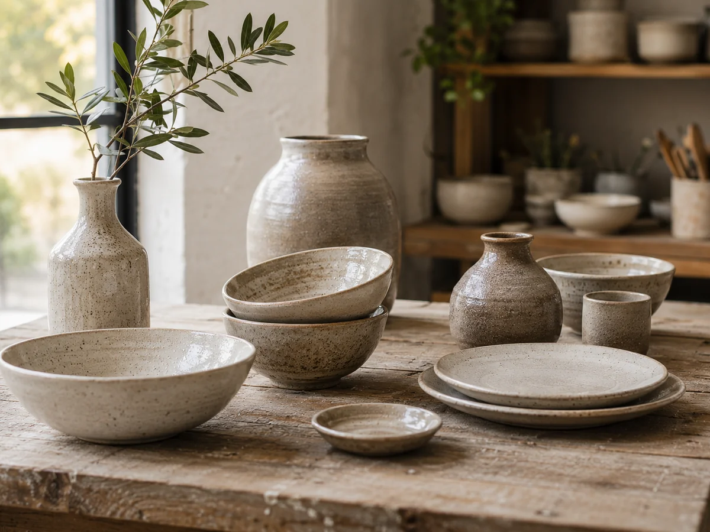
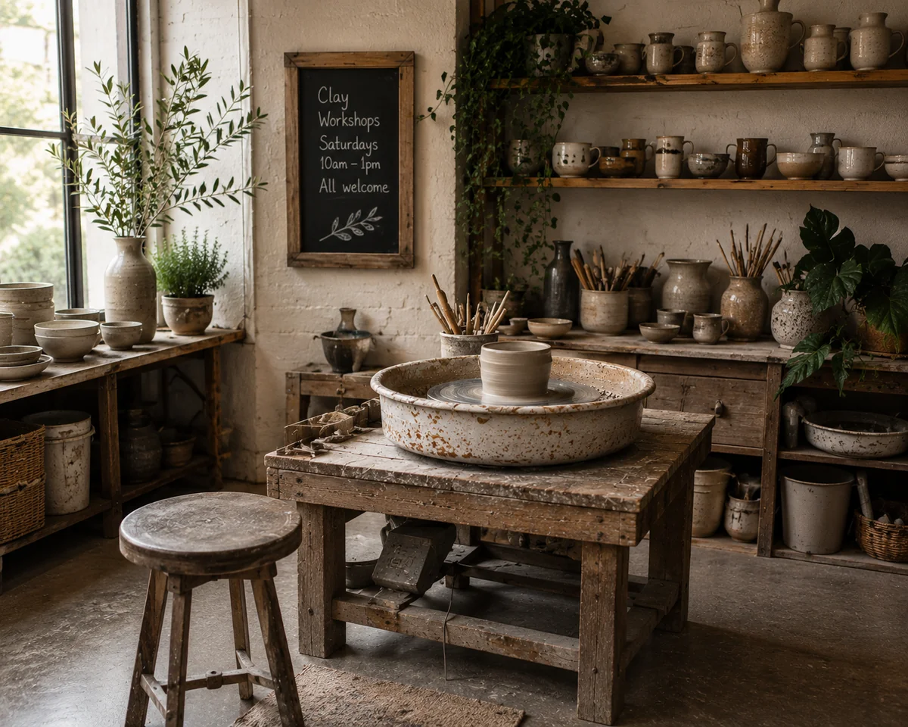
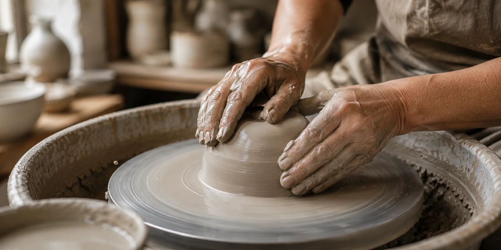
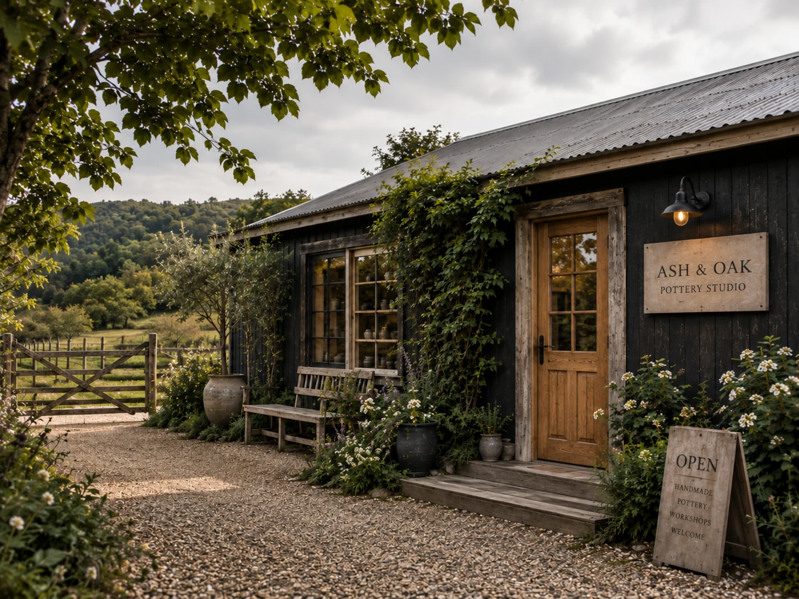

01 / ClayShaped by hand.
Shaped by hand.
Fired by time.
Wild clay. Wood ash glazes.
Objects made to become part of your day.


02 / The makerA quiet kind
A quiet kind
of work.
Elinor Hart makes small runs of everyday ceramics in a converted apple store. Slowly, and with intention.
01 / 03



03 / The collection
Morning Collection
Soft ash white over warm stoneware. For coffee, oats, and quiet starts.
From $32

04 / The making
Made slowly.
01 / Wedging
Removing air, aligning particles, preparing the clay body for the wheel.

05 / Come closer
Come closer.
Visit the studio. Find your everyday piece.
Or come and learn with your hands.